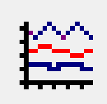

Tutorial de laboratorio¶
Este tutorial le enseñara a utilizar las herramientas para que pueda completar los laboratorios
Contenidos del tutorial
Electric¶
Creación de una celda¶
A lo largo de los laboratorios se creará una librería con diferentes compuertas lógicas, que permitirán crear circuitos más complejos. Como referencia en esta parte del tutorial se creará un inversor, tanto en su vista en esquemático como el layou
Creación de la una librería y nueva celda¶
Inicie Electric, y seleccione File˖New libary, elija un nombre para la librería, la librería puede contener cuantas usted desea y es una buena forma de agrupar distintas celdas
{kind=link}
Figura 1 Nueva librería
Para crear una celda dentro de la librería dé click-derecho sobre la librería y seleccione NewCell, la celda puede tener múltiples vistas por ejemplo esquemático, layout e icono.
La celda que se construirá como ejemplo será un inversor, se especificarán los tamaños de los transistores, se incluirán parámetros de Spice para la celda, y se utilizarán las herramientas DRC y NCC de Electric, todo esto para que poder tener una idea de cómo debe crear las celdas requeridas en el laboratorio.
Esquemático¶
Para crear la vista en esquemático seleccione la opción en la siguiente ventana. Seleccione un nombre en este caso Inversor.
{kind=link}
Figura 2 Nueva celda
Ahora dentro de la librería VLSI lab, usted podrá notar, una celda Inversor{sch}, dando click sobre esta celda puede iniciar a editarla.
Electric define varios componentes para esquemáticos y layout, para observar los componentes disponibles para la creación de este primer esquemático, de click en la pestaña de componentes y seleccione schematic. Se observara entones la ventana de componentes tal como se muestra en la Figura 3; esta lista de componentes incluye elementos básicos de un circuito como transistores, resistencias, capacitores.
{kind=link}
Figura 3 Ventana de componentes de la Librería
El objetivo es dibujar una compuerta como la que se muestra en la Figura 4. Seleccione Window˖Toggle grid para hacer visible grilla, esto le ayudara a alinear los objetos. Dé click-izquierdo sobre el símbolo de transistor nMOS, en la ventana de componentes (al lado izquierdo de la pantalla), de click-derecho sobre la ventana del esquemático para colocar el transistor. Repita lo anterior hasta que tenga, el transistor nMOS, pMOS, el símbolo de Tierra y de alimentación en la ventana de su esquemático. Para mover los objetos basta con dar click-izquierdo sobre ellos y arrastrarlos. El valor de largo/ancho de los transistores por defecto es 2/2, el ancho se puede cambiar dando doble click sobre los transistores, para este primer inversor iniciaremos creando el pMOS de un ancho que sea el doble del ancho del nMOS. Los tamaños pueden ser 10𝞴para el pMOS y 5𝞴para el nMOS
{kind=link}
Figura 4 Esquemático del inversor
Ahora, se deben hacer las conexiones para estos de click-izquierdo sobre alguno de las terminales del transistor, ahora de click-derecho sobre alguna terminal del otro transistor o componente.
Se necesitan definir los puertos (entradas,salidas) de la celda. Para esto se debe seleccionar la entrada e ir a Export • Create Export. Escoja un nombre y seleccione una característica en este caso Input. Se debe hacer lo mismo para la salida.

Figura 5 Seleccionando la entrada
Use File˖Save para salvar la librería, es bueno salvar constantemente los cambios.
Ícono¶
Cada esquemático tiene un símbolo correspondiente, llamado icono usado para representar la celda en un nivel de jerarquía superior. Se necesita crear un icono para el esquemático que se acaba de crear, para esto seleccionamos view˖MakeIconView.
Electric creará un icono genérico y lo colocara en la vista de esquemático. Sin embargo el esquemático es más fácil de leer cuando el icono usado nos resulta familiar, en lugar de las cajas genéricas que Electric crea, por lo que es buena idea modificar este icono para obtener el símbolo representativo de un inversor.
Para editar el icono, damos click sobre él y seleccionamos Cell˖DonwHierarchy, borramos la caja genérica y utilizamos las distintas formas para crear un inversor, es buena idea mantener la grilla encendida para que la entrada y salida queden alineadas.
Layout¶
Ahora crearemos el layout. Vaya a Cell˖NewCell y seleccione la vista de layout, utilice el mismo nombre que uso para el esquemático. Al hacer esto la librería se verá como se muestra a continuación, donde la celda Inversor tiene tres vistas.
{kind=link}
Figura 6 Celda del inversor
Todas las celdas se construirán usando la tecnología mocmos (tecnología MOSIS CMOS), vaya a File˖Preferences˖Tecnology, seleccione mocmos, 3 capas de metal, 2 de poli y opción de submicron rules. También es necesario cambiar la escala a para esto vaya a File˖ Preferences ˖Scale seleccione 300 nm.
{kind=link}
Figura 7 Tecnología mocmos
Es importante escoger un “estilo” consistente para dibujar las celdas de forma que cuando se necesite construir circuitos más complejos, las celdas de nuestra librería puedan “calzar” unas con otras similar a un LEGO. Para este laboratorio Vcc y Vss deberán correr de forma horizontal en la parte superior e inferior de la celda en metal 1, el espacio entre Vcc y Vss será de 80 λde centro a centro. Los transistores nmos ocuparan la parte inferior de la celda y los pmos la parte superior; las entradas y salidas se conectaran por medio de contactos de metal 2, aparte de esto las ningún metal2 o 3 deberá ser utilizado dentro de las celdas. Teniendo esto en cuenta se iniciará a construir el inversor.
Empiece por colocar el transistor nmos. Usted notara una pequeña cruz en la pantalla, este es el centro o origen (0,0), dibuje el su inversor a una buena distancia del centro al terminar el layout moveremos el inversor a la posición correcta.
En la pestaña de componentes se encuentra el transistor nmos, colóqueloen la ventana, recuerde que un transistor nmos se forma cuando poli-silicio cruza sobre una difusión N, en Electric la difusión n es representada como una difusión verde rodeada de capa punteada de color amarillo, y la capa sombreada de color amarillo que“contiene” el transistor representa el pozo de material P.

Figura 8 Trasistor Nmos
Ahora rotemos el transistor para que la capa de poli-silicio quede de forma vertical, esto lo puede hacer en Edit˖Rotate o también haciendo doble click sobre el transistor, con esta última opción también se pueden cambiar otras propiedades del componente incluyendo el ancho. Ahora coloque un transistor Pmos, rótelo 90 grados y cambie su tamaño a 5𝞴.
{kind=link}
Figura 9 Propiedades del transistor
Modelos de Spice para los transistores¶
Para poder tener la posibilidad de simular las compuertas que se crean a lo largo del laboratorio la es necesario establecer el modelo de Spice para los transistores, seleccione el transistor Pmos y vaya a Tools˖Spice˖SetSpiceModel, al hacer esto aparecerá un texto sobre el transistor.
{kind=link}
Figura 10 Estableciendo el modelo de Spice
Debemos cambiar este texto a PMOS para esto nos posicionamos sobre el texto y con Crtl+I lo editamos.
{kind=link}
Figura 11 Cambiando el modelo a PMOS
Hacemos lo mismo con el transistor NMOS, cambiando el modelo a NMOS.
{kind=link}
Figura 12 Modelo de Spice transistor NMOS
Una vez que se establecieron los modelos de Spice es posible continuar dibujando el layout para el inversor. Conecte los poli-silicio, haciendo click izquierdo en el extremo inferior del pMOS y click derecho en el extremo superior del nMOS. Para este punto usted deberá tener su diseño como se muestra a continuación.
{kind=link}
Figura 13 Inversor: conexión PMOSy NMOS
Hay que crear contactos a ambos lados en el sourcey drainde cada transistor. Para eso, seleccionamos Metal-1-Active-Contact n o p, según corresponda. Para el transistor n, seleccionamos el nAct, y lo creamos a alguna distancia a la izquierda del transistor n. Hacemos doble click sobre el contacto y fijamos su valor y en 4 (el mismo que el transistor). Se ocupan dos contactos ya uno está hecho, para duplicarlo seleccionamos el objeto y presionamos CTRL-M, colocamos este otro contacto a la derecha del transistor nMOS.
Antes de acercarlo al drain y source debemos realizar las conexiones, hacemos click izquierdo sobre el contacto y luego hacemos click derecho sobre el draino source.
{kind=link}
Figura 14 Inversor: contactos
DRC¶
Antes de acercar los contactos a la difusión utilizaremos la herramienta DRC de Electric que indica las violaciones de reglas en nuestro layout. Seleccionamos en el menú: Tools, DRC, Check Hierarchically, o solo presionamos F5.
No debería haber errores. Si los hubiera, presionando > o < se puede ver todos los errores .El error aparecerá en la ventana de mensajes y se señalará en la ventana del layout tal y como se muestra a continuación. También se pueden observar los errores en la pestaña Explorer.
{kind=link}
Figura 15 DRC
Hay que acercar los contactos al transistor tanto como sea posible, sin violar las reglas de diseño que en este caso son 3𝞴. Para eso es más fácil mostrar el cuadriculado, el cual está en distancias de lambda, en el menú: Window, Toggle Grid.
Ahora agreguemos Vcc y tierra. Las líneas deben ser de un ancho de 8 λ, para agregar la línea seleccione metal-1-pin, dibujar la líneaen el lado derecho usando primer el click izquierdo y luego el click derecho, dando doble click en la línea cambie el ancho a 8 λ, ahora colocaremos estas líneas a una distancia de 80 λ, para realizar mediciones vamos a Window˖Measurements˖ ToggleMeasumentMode.

Figura 16 Inversor: líneasde Vcc y Vss
Ahora acerque los transistores a una distancia de 1 lamda de la líneas de metal que acabamos de crear, de mantenga el click izquierdo presionado para arrastrar el transistor.
Para realizar la conexión entre el metal 1 y los contactos, haga click izquierdo sobre el contacto y click derecho sobre el metal 1, si el ancho de esta conexión resulta ser de 8𝞴, de doble click sobre el cable para cambiar las propiedades y ajustar el ancho a 4 𝞴
Cuando haya terminado de realizar estas conexiones, debe extender las líneas de Vcc y Vss, 2𝞴más allá del contenido de la celda. Esto para que al conectar distintas celdas su contenido estén separados por una distancia de 4 λy se cumpla así con las reglas de diseño.
{kind=link}
Figura 17 Inversor: Vss y Vcc
Su layout debe verse similar a la figura que se muestra a continuación, recuerde utilizar contantemente la herramienta DRC, para verificar que la celda cumpla las reglas de diseño.
{kind=link}
Figura 18 Inversor
Recuerde que es necesario colocar contactos en los pozos para evitar que los diodos BJT que se forman entre pozo y source/drain se polaricen. Pondremos Nwell taps and P-well taps en cada celda sobre los cables de Vcc y Vss cada, estos se encuentran en la ventana de componentes.
Colocamos los taps de vdd seleccionando Metal-1-P-Well-Con para el pozo P y colocándolo “encima” del metal del GN. Se colocan al menos 2 taps, al menos a 3 lambdas de distancia entre ellos. Luego de conectar cada uno hay que conectarlo al metal por medio de la combinación click-izquierdo-click-derecho. Se realiza lo mismo con Vdd, usando Metal-1-N-Well-Con.Su compuerta debe lucir como se muestra en la siguiente figura.
{kind=link}
Figura 19 Inversor: taps
Ahora conectaremos la entrada al poli-silicio, usando el ícono Metal-1-Polisilicon-1-Contact. Lo colocamos unos cuantos lambdas a la izquierda del poli-silicio y lo conectamos con el click derecho, también debemos realizar la conexión de metal 1 para la salida del inversor y colocar un contacto de metal 1 metal2 (vía).
Solo falta exportar la entrada, salida, Vcc y Vss y su compuerta debe lucir como se muestra en la figura a continuación
{kind=link}
Figura 20 Inversor contactos de entrada y salida
Para exportar la entrada seleccionamos el contacto, y en Export˖CreateExport se le debe dar un nombre, se hace lo mismo con la salida. Para Vcc y Vss el procedimiento es similar solo que en este caso en característica se debe seleccionar power o gnd según corresponda, Electric reconoce vdd y gnd como nombres especiales, asegúrese por lo tanto de usar esos nombres.
{kind=link}
Figura 21 Inversor: exportando la entrada
Al terminar la compuerta verifique nuevamente que la compuerta cumpla con las reglas de diseño.
La última tarea consiste en posicionar la celda en lugar correcta, centrarla facilitara conexiones en otros circuitos. Para esto utilizamos el botón Toggle-special-select selecionanos el centro de la ventana y arrastramos el símbolo de cruz al centro de nuestra celda.
NCC¶
Electric puede comparar dos celdas diferentes para determinar si tienen la misma topología. Esta operación se llama Layout vrs Squematic, es un tipo de verificación formal, pero Electric puede comparar dos circuitos, sin importar que ambos sean esquemáticos o layout por eso en Electric se usa el término NCC (Network Consistency Checking).
Vaya a File˖Preferences˖Tools˖NCC y asegúrese que las opciones marcadas sean iguales a las siguientes
{kind=link}
Figura 22 Preferencias para NCC
Ahora corrobore que su esquemático y layout sean equivalentes, vaya a Tools˖NCC˖SchematicandLayoutViews… Si no hay ninguna diferencia en la ventana de mensajes de Electric deberá observar el siguiente mensaje.
{kind=link}
Figura 23 LVS
Si existiera alguna diferencia, entonces observara una ventana como la siguiente, corrija su celda si es necesario.
{kind=link}
Figura 24 Mensajes de la herramienta NCC
Si desea conocer los detalles se debe hacer click sobre las diferencias del lado izquierdo de la ventana de mensajes del NCC
{kind=link}
Figura 25 Diferencia reportadas por NCC
Preparar la simulación en Spice¶
Electric puede generar archivos de entrada para diferentes simuladores externos, en nuestro caso usaremos LTspice. Pero antes de realizar una simulación se deben cambiar algunas de las preferencias que Electric tiene por defecto.
En File˖Preferences, en la sección “Tools” seleccionamos Spice, y cambiamos las preferencias a las que se muestran a continuación.
{kind=link}
Figura 26 File/Preferences/Tools/Spice
Verifique los transistores de la celda que desea simular tengan definido el modelo de Spice, ya sea NMOS o PMOS para hacer esto seleccione el transistor y vaya a Tools˖Spice˖SetSpiceModel, al hacer esto aparecerá un texto sobre el transistor que deberá cambiar a PMOS o NMOS.
Siempre que se vaya a hacer una simulación copiaremos la celda que deseamos simular y cambiaremos su nombre, debe ser un nombre representativo por ejemplo Inversor_lay_sim. Como ejemplo realizaremos la simulación para un inversor.
Primero creamos una nueva celda en vista de layout o esquemático según lo que se desee simular, vamos a Cell˖PlaceCellInstanse y seleccionamos la celda que deseamos simular en este caso Inversor {lay}
{kind=link}
Figura 27 Nueva versión de la celda para simulación
Usted deberá tener algo similar a lo que se muestra a continuación.
{kind=link}
Figura 28 Nueva celda para simulación
Si observa con atención podrá notar que los puertos que se exportaron están se pueden ver en esta celda vamos a conectar estos puertos y darles un nombre para la simulación en Spice. Para conectarlos basta con hacer click sobre los puertos y dar otro clicken otro lugar de la ventana. Ahora para cambiar el nombre solo es necesario hacer doble click sobre las líneas de metal y cambiar el nombre de la “net”.
{kind=link}
Figura 29 Conexiones y nombres para la simulación
Ahora se debe incorporar el código de Spice que se desea simular, en las pestaña de componentes seleccionamos MISC ˖SpiceCode. De Click sobre la ventana para colocar el texto, y ahora presione Crtl+I para modificarlo.
{kind=link}
Figura 30 Ventana donde se incorpora el códido de Spice
De click en Ok y ahora pondrá ver este código en la ventana donde esta su celda para simulación, modifique el tamaño del texto para que sea visible y de click en la opción de multilinea. Como ejemplo para esta simulación cambiaremos el voltaje de entrada de 0 a 5 volts, y no pondremos ninguna carga la salida de la compuerta. Debemos descargar el archivo spice.txt que es el archivo que contiene los parámetros para simulación de Spice, estos parámetros son para un proceso subsidiado por MOSIS (AMI C5 0.5um), asegúrese de incluir este archivo de forma correcta y de que los nombres de las conexiones que realizó correspondan a los nombres del código de Spice. Ejemplo de archivo a incluir:
{kind=link}
Figura 31 Celda lista para la simulación
Código de ejemplo:
Para este punto tal vez no comprenda este código de Spice, por lo que en la siguiente sección Código de Spice se detalla las opciones que se pueden utilizar para otro tipo de simulaciones.
Ahora generaremos el código para Spice ,vaya a Tools/Simulation(Spice)/ WriteSpiceDeck. Con estose creara un archivo de extensión .spi que es la entrada para la simulación en LTspice.
LTSPICE¶
La herramienta para simulación es un simulador de SPICE de código abierto, y es compatible con Electric, de forma que los archivos de Spice generados por Electric funcionan perfectamente en la herramienta de simulación
Simular en LTSPICE¶
Abrá LTSpice y vaya File˖Open y busque el archivo que desea simular.
{kind=link}
Figura 32 Archivo .spi en LTspice
Para correr la simulación de click en el botón . Si el botón de correr no funciona intente cambiar la extensión del archivo .spi o .cir. Ahora tendrá una nueva ventana en esta es donde se grafican los resultados de la simulación, vaya a  para seleccionar las señales que desea graficar.
{kind=link}
{kind=link}
{kind=link}
Figura 33 Selección de las señales
El grafico para el inversor construido en la etapa anterior debería verse como el siguiente
{kind=link}
Figura 34 Curva característica del inversor
También se puede graficar en distintas ventanas, por medio de la opción “Add Plot Pane”
{kind=link}
Figura 35 Como agregar ventanas para graficar
Se pueden agregar tantas ventanas como se desee en este caso se agregó una más para visualizar el voltaje de entrada y el de salida en distintas ventanas
{kind=link}
Figura 36 Dos ventanas de gráficos
Para visualizar un punto con mayor detalle se pueden usar las opciones de zoom
{kind=link}
Figura 37 Opciones de zoom
Y en la parte inferior izquierda de la pantalla se puede observar las coordenadas del punto.
Código de Spice¶
Fuente de voltaje¶
Spice tiene varias fuentes de voltaje: SINE, PULSE,AC, DC. A continuación se muestra un ejemplo para cada una de ellas.
Componentes¶
En Spice se pueden colocar muchos componentes por ejemplo resistencias, capacitores, inductores , diodos, líneas de transmisión y muchos otros.
Capacitor
Resistencia
Notas teóricas¶
Pendiente de las señales¶
Los cambios de estado en una señal digital no son instantáneos, la transición de un uno lógico a un cero lógico o viceversa toma cierta cantidad de tiempo de forma que se la transición tiene una pendiente o “slope”.
{kind=link}
Figura 38 Pendiente
Para referirnos a la pendiente que se muestra en la figura anterior, se dice que la pendiente es de un 100% en 5 ns